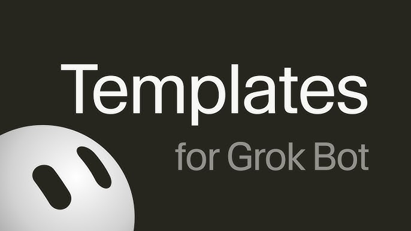

Stop pasting vibes. Design the Bot. Get a score. 49 operating contracts, 10 teams, 47 skills, 8 routines — aligned with the official Grok Bot docs. v1.0.0.
npx @cobusgreyling/grokbot list npx @cobusgreyling/grokbot init pr-reviewer --print npx @cobusgreyling/grokbot init --team eng --out ./eng-bots
Seven drafts from one idea. Nothing hits the network.
Steal the structure. Never steal the post. Never post.
Staging repro packs with evidence — never production customer data.
Draft notes from merged PRs — never tag, never publish.
Report failures and flakes — never merge, never hide with reruns.
Draft the doc diff — never commit, never rewrite code to match.
Slack and repro packs become unsent issues — never auto-filed.
Review starts at the scary diff, not the title.
Draft SQL from the schema — never run writes on a live database.
Recommend issues and PRs — never push main, never edit protection.
Collected, renewing, past-due — a memo, not a collections bot.
Cited drafts from the pack — the Submit button stays human.
A query set on a cadence — not "hey ChatGPT, do we show up".
A reading pile, not a reply thread.
Alert only when the page actually changed. Silence is a result.
One draft in. A set of variants out. Nothing ships.
The issue is written. The send button stays with the owner.
Numbers and a Slack draft. The budget does not move itself.
One job in, a shippable Bot recipe out — not a cute persona.
Correct stale memory against a source — do not wipe the role.
Paste START.md, tap a team, get a roster — not a catalog dump.
Cut and merge first — never grow the fleet past the ask.
Pick one owner, hand off, go silent — never do the work.
Redact first — the share link must not carry secrets or customers.
Only items that map to the priority list — with a decision flag.
Movers and recommendations — the console stays closed.
Totals that reconcile — exceptions that cite the signed policy.
A timeline a skeptic can audit — not a production console.
A week-one plan a manager can edit — invites stay in draft.
A vendor work list, not a chase bot.
Draft the decline. Never move the meeting yourself.
Buckets and drafts — never send, never delete, never unsubscribe.
Evidence of last use, then a list — you click cancel.
Sanity-check the trip. Never book. Never pay.
Package what was verified — never issue the ship or block.
Quotes and counts. You do not ship the roadmap.
One owner per role. The human issues the ship verdict.
Hotspot, links, facts vs hypotheses — never touch production.
One question, three minutes, every claim has a URL.
Claims, evidence, disagreements, not-found — then a next read.
Find the load-bearing claim that never had a source.
Recap and tasks, still in the building. Sending is a later named L2.
Walk in knowing the last promise — the customer already lived the rest.
Volume without sounding like a sequence tool — and without sending.
Twenty names with evidence. Outreach stays in the draft folder.
Pattern with evidence. Not "they just weren't ready".
Evidence-ranked watch list — no customer mail, no CRM edits.
Quotes and dates — not a customer recap email.
A DRAFT reply with a policy cite — the Send button stays yours.
Staging reports stall when repro, the unsent issue, and the risk review live in one undifferentiated chat.
bug-reproduction · issue-drafter · pr-reviewer
Inner-loop coding agents still need an outer evidence/verdict loop before anyone merges, tags, or writes the ship rationale.
ci-sweeper · pr-reviewer · changelog · evidence-packager
Competitor noise, channel variants, and the weekly issue get mixed until someone diffs, remixes, and still does not publish.
competitor-watch · content-remix · newsletter-desk
Standing up a catalog team, cutting a bloated fleet, routing work, and minting the next contract are four jobs, not one Setup dump.
installer · roster · router · foundry
The week hides in Slack, receipts, and vendor mail until someone maps it to priorities without sending a chase.
chief-of-staff · expense-manager · vendor-inbox
Inbox zero fails when mail, meetings, and unused subs are one Bot that is tempted to send, decline, and unsubscribe.
inbox-triage · calendar-defender · subscription-audit
Latency, Slack asks, and launch day collide unless one Bot owns evidence, one clusters asks, and one refuses to publish.
product-performance · feature-ask-collator · launch-coordinator
Deep briefs, three-minute answers, and assumption hunts are different jobs; mixing them hides the not-found list.
research-desk · cited-brief · source-interrogator
Outbound volume is useless if the next call is unbriefed and the recap never gets written down before it is sent.
sales-outbound · meeting-prep · call-followup
Renewals slip when health is a vibe, replies go out uncited, and promises evaporate after the call.
account-health · support-replies · promise-log